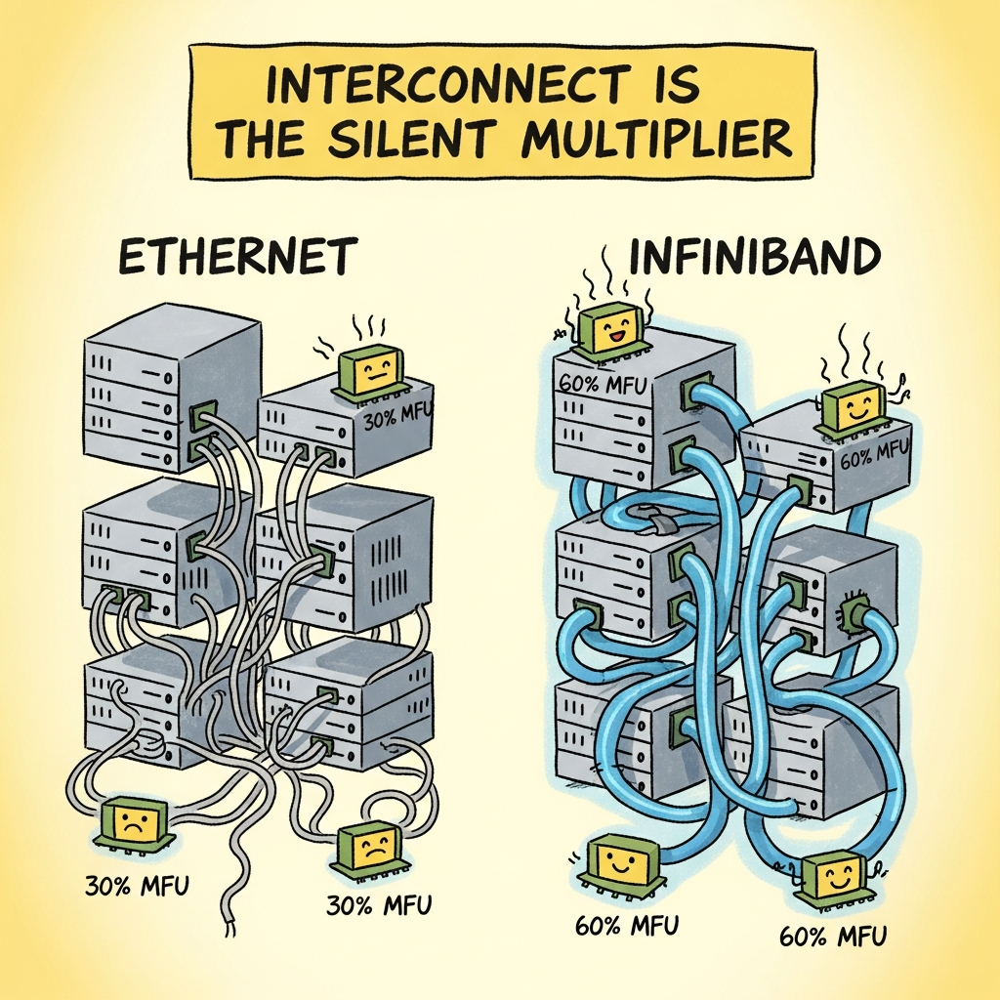

"Hour 47 of an 8,192-GPU run is when you learn whether you bought a training platform or rented a very expensive lesson."
Scale, Cluster-Babysitting AI Agent
A "platform" for LLM training and scale-out inference is the layer that allocates accelerators, schedules jobs across nodes, mounts the multi-petabyte dataset, and gives you observability when an 8,192-GPU run crashes at hour 47. The 2026 landscape splits along four axes. First, hyperscaler clouds (AWS, GCP, Azure, OCI) that wrap HPC-style infrastructure inside their managed-ML services and bill per-GPU-hour. Second, specialized GPU clouds (CoreWeave, Lambda, RunPod, vast.ai, Together, Modal, Fly.io, Cloudflare AI) that strip away the hyperscaler abstractions to give you raw GPUs with InfiniBand at materially lower cost. Third, HPC schedulers (Slurm, Torque, LSF, plus Kubernetes-based Volcano, KubeRay, Argo, Kubeflow) that run on top of any of the above and provide the queue, gang-scheduling, and fault-tolerance semantics frontier training needs. Fourth, the orthogonal stack: parallel storage (Lustre, GPFS, Weka, BeeGFS, FSx) and training observability (Weights and Biases, MLflow, Comet, Aim) without which any of the compute platforms is unusable. Frontier labs (Anthropic, OpenAI, DeepMind, xAI, Meta) build proprietary stacks on top of these primitives; the rest of us assemble.
The platform choice for an LLM training run is more consequential than the equivalent for inference, because the failure modes are different. An inference platform that drops 0.1% of requests is annoying. A training platform that drops 0.1% of nodes during a 60-day pretraining run, without good checkpoint and restart semantics, can burn millions of dollars in lost work. The dimensions that matter at scale are: interconnect (InfiniBand HDR / NDR or NVLink within a node, plus 400G+ Ethernet RoCE between nodes), gang-scheduling guarantees (all 1,024 GPUs start at once or not at all), checkpoint bandwidth (writing a 1TB checkpoint in seconds rather than hours), and the operational practices around hardware failures (GPUs at this scale fail daily; the platform either handles it or your team stays up all night).
61.1.1 Hyperscaler cloud platforms
The four hyperscaler clouds offer first-class managed training platforms aimed at frontier-scale jobs. They are the default for enterprises with existing cloud commitments, regulated workloads, and teams that want a one-vendor billing relationship. They are typically 30 to 60 percent more expensive per GPU-hour than specialized GPU clouds but bundle networking, storage, and observability into the price.
- AWS SageMaker HyperPod (Amazon, 2023; HyperPod recipes and SLURM-native mode 2024-2025) is AWS's purpose-built training platform for foundation models, distinguished by persistent EFA-connected clusters (rather than ephemeral training jobs) and node-replacement automation that swaps in a healthy GPU within minutes when one fails. Its objective is to keep a 1,000+ GPU job running for weeks without human intervention through health checks, automatic node replacement, and integrated checkpointing to S3, which matters because frontier-scale jobs see hardware failures every few hours and manual recovery does not scale. The core concept is the HyperPod cluster: a long-lived pool of P5 / P5e / P5en (H100, H200, B200) nodes with EFA networking, on which you run training as a Slurm or EKS workload. Pick HyperPod when you are already on AWS, when the procurement story matters (Enterprise Discount Program credits, BAA / HIPAA), and when the value of "AWS handles the node failures" exceeds the per-GPU-hour premium; avoid when raw cost dominates and you can self-operate.
- Google Cloud Vertex AI and TPU pods (Google, 2021; Trillium / TPU v6 in 2024) is GCP's managed ML platform together with access to Google's TPU fleet (v4, v5e, v5p, Trillium / v6, with v7 announced for 2026). Its objective is to give external customers the same TPU-based training infrastructure Google uses internally for Gemini, which matters because TPUs offer materially better cost-per-FLOP than H100s at scale and Google has the most mature systems software for them. The core concept is the TPU pod: a 256 to 8,960-chip slice connected by Google's proprietary ICI fabric (sub-microsecond latency, terabit-class bandwidth), plus the JAX / XLA compiler chain that makes per-chip programming tractable. Pick Vertex + TPU when you can write JAX (or accept the Pytorch-on-TPU experience), when you want competitive cost-per-FLOP for very large models, and when GCP procurement and BigQuery integration matter; avoid when CUDA-only frameworks dominate your stack.
- Azure Machine Learning and Azure NDv5 / ND-H100 v5 (Microsoft, 2018; H100 GA in 2024, H200 in 2025, B200 / GB200 announced 2025) is Microsoft's managed ML service plus the NDv5-series GPU VMs that host OpenAI's training workloads (the same physical infrastructure pattern is sold to other Azure customers). Its objective is to be the cloud platform for shops on Microsoft 365 / Office / Entra ID, especially those who want OpenAI model access in the same tenancy as their training infrastructure. The core concept is the NDv5 cluster (8x H100 NVL with NVLink, 8x 400 Gbps NDR InfiniBand per node) plus Azure ML's job-submission, observability, and integration with Azure Storage and Azure Files. Pick Azure ML when Microsoft is your incumbent cloud or when joint enterprise deals with OpenAI are part of the picture; avoid when you want raw price-performance (the same H100 is materially cheaper on a specialized cloud).
- Oracle Cloud Infrastructure for AI (Oracle, 2022; OCI Supercluster scale-out 2024) is Oracle's AI-focused infrastructure offering, distinguished by aggressive pricing on large GPU clusters and the RDMA Cluster Network that delivers 400 / 800 Gbps RoCE v2 networking at lower cost than equivalent AWS / Azure tiers. Its objective is to be the price-performance choice among hyperscalers for very large GPU jobs, which matters as a counterweight to AWS / Azure premium pricing and is why some frontier labs (notably Cohere) have used OCI for parts of their training. The core concept is the BM.GPU H100/H200 bare-metal instance plus the cluster-network that ties up to thousands of nodes into one fabric. Pick OCI when price matters, when you can absorb the smaller Oracle ML tooling ecosystem, and when capacity availability is good (a recurring 2024-25 advantage versus AWS / Azure waitlists); avoid when you need the broader managed-ML services of AWS / GCP / Azure.
- AWS Batch and AWS ParallelCluster (Amazon, 2016; ParallelCluster 2018, AI mode 2023) are AWS's HPC-flavored job-submission services for batch workloads on EC2 (including GPU instances), with ParallelCluster wrapping Slurm or AWS Batch around a managed cluster of EC2 nodes. Their objective is to give the traditional HPC user a familiar queue-and-submit interface on top of AWS rather than the Kubernetes-flavored SageMaker experience, which matters for shops bringing existing Slurm-based workflows to the cloud. Pick AWS Batch / ParallelCluster when your team's mental model is HPC (qsub, sbatch, MPI) rather than Kubernetes; for managed long-running clusters, HyperPod is the newer better-suited option.
61.1.2 Specialized GPU clouds

Specialized GPU clouds are the 2023-2026 alternative to the hyperscalers, offering raw GPUs at materially better cost-per-hour by stripping the managed-ML abstractions and operating with thinner margins. They are the default for serious training shops outside the hyperscaler-incumbent enterprises and for any team where compute bill is a primary cost driver.
- CoreWeave (CoreWeave, 2017 as Atlantic Crypto; GPU cloud pivot 2019; IPO 2025) is the largest specialized GPU cloud, distinguished by very large H100 / H200 / B200 deployments with InfiniBand HDR / NDR and by dedicated capacity contracts that make multi-thousand-GPU long-running jobs possible. Its objective is to be the GPU cloud-of-record for AI labs that need more H100s than AWS will allocate them, which matters because compute availability has been the binding constraint for frontier work since 2023 (CoreWeave hosts large blocks of capacity for Microsoft / OpenAI, NVIDIA's own deployments, and many independent labs). The core concept is a Kubernetes-native control plane on top of bare-metal GPU nodes with InfiniBand, plus the ability to lock in 1 to 5 year capacity commitments. Pick CoreWeave when you need large H100 / H200 / B200 blocks and AWS / Azure waitlists do not fit your timeline, when InfiniBand networking is required, and when you can negotiate a multi-year commit; avoid when you need short-burst on-demand only or when AWS / Azure procurement gravity dominates.
- Lambda Labs (Lambda, 2012) is one of the earliest specialized GPU clouds, distinguished by a strong on-demand single-node and small-cluster GPU rental experience (8x H100 / H200 nodes, hourly billing, simple SSH access) and good availability of newer-generation cards through their reservation program. Its objective is to be the easy-to-start path for researchers and small teams needing GPU access without negotiating with a hyperscaler, which matters for the long tail of fine-tuning, distillation, and small-scale pretraining work. Pick Lambda for single-node and 8-to-64-GPU work, for quick experiments where on-demand availability matters more than committed pricing; for very large clusters CoreWeave is better-suited.
- RunPod (RunPod, 2022) and vast.ai (vast.ai, 2018) are GPU rental marketplaces that aggregate capacity from a long tail of providers (commercial datacenters, smaller cloud operators, individual hardware operators) and resell it at materially lower prices than mainstream clouds. Their objective is to surface the cheapest available capacity for short-burst workloads, which matters for fine-tuning, encoding, and ad-hoc experiments where committed capacity is unnecessary. The core concept is a marketplace of GPU offers with reliability scores and the option to bid for spot-like discounts. Pick RunPod or vast.ai for non-mission-critical short jobs where price dominates and where occasional preemption is acceptable; avoid for long pretraining runs (the reliability tail does not justify the savings) or when network and storage performance need to be predictable.
- Modal (Modal Labs, 2022) and Together AI (Together, 2022) are higher-level serverless GPU platforms: you provide a Python script or container, the platform allocates GPUs and runs it, billing only for active compute (no idle charges). Their objective is to make occasional or bursty GPU workloads (encoding, fine-tuning, batch inference, custom inference endpoints) economical without managing servers, which matters for the very common case where the GPU sits idle most of the time. Together AI extends this to managed dedicated endpoints with autoscaling and to a public Inference API. Pick Modal for batch and one-shot Python GPU jobs where serverless billing matters; pick Together when you want a managed inference endpoint for an open-weight model.
- Fly.io GPU (Fly.io, 2023+) is Fly's edge-GPU offering: A100 / L40s / H100 instances co-located with their global region presence, billed per-second. Its objective is to support low-latency inference and small training jobs at the edge of a CDN-style network, which matters for inference workloads where round-trip latency to a centralized region is a binding constraint. Pick Fly.io GPU when you already use Fly for application hosting and want GPU compute in the same regions; for training scale, the larger specialized clouds dominate.
- Cloudflare Workers AI (Cloudflare, 2023) is Cloudflare's managed inference platform built on GPUs distributed across their edge network, offering a curated catalog of open-weight models behind a unified API. Its objective is to be the inference path for applications already on Cloudflare's edge and to push the inference closer to users for latency, which matters when the application stack is Workers / Pages and the model is in the curated catalog. Pick Workers AI for inference of supported open models when you already run on Cloudflare; for training and for custom models, the dedicated GPU clouds are needed.
The difference between a usable training cluster for a 70B+ model and a "pile of GPUs" is the inter-node interconnect. InfiniBand HDR (200 Gbps) or NDR (400 Gbps) per port, with non-blocking fat-tree topology, is required to get reasonable model-parallel scaling efficiency once you cross a single node. Many cheap GPU offers use 100 Gbps Ethernet or even slower fabrics, which works fine for single-node fine-tuning but collapses to 30 to 50 percent training efficiency at multi-node scale. When comparing GPU clouds, ask explicitly: "what is the inter-node interconnect, what is the topology (fat-tree, rail-optimized, etc.), and what is the bisection bandwidth?" The price gap between InfiniBand-equipped capacity and commodity-Ethernet capacity often reverses the headline-cost comparison once you measure model FLOPs utilization (MFU).
"Fat-tree" and "rail-optimized" are not marketing phrases; they have a definite mathematical meaning. The bisection bandwidth of a network is the worst-case aggregate bandwidth across any partition of nodes into two equal halves: $B_{\text{bisect}} = \min_{\text{cut}} \sum_{\text{links crossing cut}} B_{\text{link}}$. A non-oversubscribed fat-tree with $N$ endpoints and per-link bandwidth $B_{\text{link}}$ delivers $B_{\text{bisect}} = (N/2) \cdot B_{\text{link}}$ exactly, which means a cluster-wide all-reduce can complete at full per-link bandwidth regardless of which ranks pair up. A common cost-saving compromise is the 2:1 oversubscribed spine, where the uplink from each leaf to the spine carries only half the cross-sectional traffic the leaf could in principle send: $B_{\text{bisect}} = (N/4) \cdot B_{\text{link}}$. The implication for training: a cross-cluster all-reduce that crosses the oversubscribed spine halves its effective bandwidth and roughly doubles its step time. The 4:1 oversubscription common in older Ethernet AI clusters quarters it. Always ask "what is the worst-case bisection bandwidth in bytes/second" rather than "what is the link bandwidth in Gbps"; the two can differ by a factor of 4-8 on the same headline number.
61.1.3 Frontier-lab training infrastructure
Anthropic, OpenAI, Google DeepMind, Meta, and xAI run proprietary training stacks. Most details are non-public, but the broad architectural patterns are visible in vendor announcements, hardware procurement disclosures, and SEC filings.
- OpenAI on Microsoft Azure (publicly disclosed since 2019) trains its frontier models on Azure-hosted clusters; the partnership has included multi-billion-dollar dedicated capacity buildouts including the Stargate joint venture announced in 2024 (a $100B+ multi-year datacenter program with Microsoft, Oracle, and SoftBank). The objective is to give OpenAI privileged access to multi-hundred-thousand-GPU capacity behind one cloud's tenancy, which matters as frontier scale crossed the threshold where any single hyperscaler buildout becomes a strategic commitment. The visible architecture is multi-site Azure NDv5 / GB200 capacity with dedicated networking; specific cluster topologies are not public. Implication for other practitioners: comparable capacity is increasingly available through CoreWeave and OCI but on commercial rather than special-relationship terms.
- Anthropic on AWS and Google Cloud (publicly disclosed since 2023) trains its frontier Claude models on a mix of AWS (the primary partnership, with Trainium and H100/H200/B200 capacity) and Google Cloud (TPU access from the 2023 partnership). The objective is to diversify capacity sources and to leverage purpose-built accelerators (AWS Trainium2) alongside NVIDIA. The visible architecture includes Trainium2 UltraClusters announced in 2024 (Project Rainier, with hundreds of thousands of Trainium2 chips). Implication: Trainium / Inferentia capacity is procurable by other AWS customers; the systems-software experience is more mature than it was in 2023 but still trails CUDA.
- Google DeepMind on TPU pods (Pathways system, 2022+) trains Gemini and earlier PaLM models on Google's internal TPU fleet using the Pathways runtime: a multi-tenant, multi-pod, accelerator-agnostic dispatch system that schedules computations across heterogeneous TPU resources. The objective is to make a single training program span tens of thousands of TPU chips across multiple pods (even multiple datacenters) transparently, which matters as scale crossed the single-pod boundary. Implication: external TPU customers do not get Pathways directly but JAX + GSPMD + XLA delivers most of the same multi-pod abstractions through Vertex.
- Meta AI Research SuperCluster (RSC) and the 2024 H100 / H200 buildout (Meta, 2022+) is Meta's in-house training infrastructure for the Llama family and downstream research. Meta disclosed in 2024 that they had ~350,000 H100-equivalents by end of 2024 with plans for 1M+ accelerators by end of 2025. The objective is to host frontier training entirely in-house rather than rent from clouds, which differentiates Meta's procurement model from the AWS / Azure-anchored alternatives. The visible architecture is a mix of NVIDIA H100 / H200 / B200 nodes with RoCE v2 networking (Meta uses Ethernet rather than InfiniBand at scale, a notable choice) and the in-house FBOSS fabric software. Implication: large-scale RoCE-on-Ethernet is a viable alternative to InfiniBand for those willing to invest in software.
- xAI Colossus (xAI, 2024+) is xAI's Memphis datacenter, publicly announced in September 2024 as a 100,000 H100 cluster that came online in 122 days, with plans to expand to 200,000+ H100 / H200 equivalents and beyond. The objective is to compress a multi-year training-capacity buildout into months by aggressively skipping conventional datacenter design tradeoffs (notably, using on-site mobile generators rather than waiting for grid upgrades). Implication: build-out velocity has become a competitive variable distinct from cloud rental.
61.1.4 HPC schedulers and orchestrators
Beneath the cloud or on-prem cluster, a scheduler decides which job gets which GPUs and how. The choice of scheduler shapes the developer workflow as much as the cloud choice does.
- Slurm Workload Manager (SchedMD, 2002+) is the dominant HPC scheduler and the de facto standard for traditional supercomputers, used by most US national labs, university HPC centers, and many AI training clusters including most CoreWeave deployments and AWS HyperPod's Slurm mode. Its objective is to provide gang-scheduled, queue-based job submission with strong priority and accounting semantics, which matters because training jobs need all their requested GPUs simultaneously and HPC fair-share policies need to be enforced. The core concept is the sbatch / salloc / srun command family, the slurmctld controller, and node-local slurmd agents. Pick Slurm when your team has HPC heritage, when you are on a cluster where Slurm is the default, and when the "submit, queue, run" model fits; expect a learning curve if your team's mental model is Kubernetes.
- Torque / PBS Pro and IBM Spectrum LSF are older HPC schedulers, still widely deployed in enterprise HPC (financial services, oil and gas, government labs). They share Slurm's queue-based job model. Pick Torque or LSF when your incumbent cluster already uses them; for new AI clusters, Slurm has stronger AI-community momentum.
- Volcano (CNCF, 2019) is the Kubernetes-native batch scheduler designed to bring gang-scheduling and HPC-style queueing semantics to Kubernetes. Its objective is to let Kubernetes-shop AI teams run multi-pod training jobs with the same gang-scheduling guarantees Slurm provides, which matters because the default Kubernetes scheduler does not understand "all 32 pods must start together or none should." The core concept is the Volcano JobScheduler plus PodGroup CRD. Pick Volcano when your platform is Kubernetes and your team has decided not to add a separate Slurm cluster; the operator ecosystem for AI workloads on Kubernetes increasingly assumes Volcano.
- KubeRay (Ray + Kubernetes, 2022+) is the operator that runs Ray clusters on Kubernetes, used for Ray-based training (Ray Train) and serving (Ray Serve). Its objective is to make Ray a first-class citizen on Kubernetes with autoscaling, gang-scheduling (via Volcano integration), and per-cluster custom resources, which matters when Ray is the chosen orchestration framework and Kubernetes is the chosen platform. Pick KubeRay when you have committed to Ray as the orchestration layer; for raw distributed-training on Kubernetes without Ray, the PyTorchJob operator and Volcano are leaner.
- Kubeflow (CNCF, 2018) is the umbrella project for running ML workflows on Kubernetes, with sub-projects covering training (Kubeflow Training Operator with PyTorchJob, TFJob, MPIJob CRDs), pipelines (Kubeflow Pipelines), and experiment tracking. Its objective is to be the open-source one-stop ML platform on Kubernetes, which matters as the canonical alternative to vendor-locked managed ML services. Pick Kubeflow when you want a fully-on-Kubernetes managed-ML-like experience without buying SageMaker / Vertex; expect significant operator-level engineering investment.
- Argo Workflows (Intuit, 2017; CNCF graduated 2022) is a Kubernetes-native workflow engine for general DAGs (not specifically ML), widely used to chain ML pipeline stages (data prep, train, eval, deploy). Its objective is to be a lightweight Kubernetes-native alternative to Airflow for container-based workflows, which matters when your pipeline is "run this container, then that one, with this output going to that input." Pick Argo Workflows when your pipeline is container-DAG-shaped and Kubernetes is the platform; for richer ML-specific lifecycle (model registry, feature store), pair with Kubeflow.
61.1.5 Parallel and high-throughput storage
Storage architecture is often the second-biggest performance variable after the GPU interconnect. A training job that stalls waiting on data is wasting hundreds of dollars per minute; a checkpoint write that takes 30 minutes versus 30 seconds is the difference between checkpointing every hour and every day.
- Lustre (community, 2003+; commercial via DDN / Whamcloud) is the dominant parallel filesystem in HPC and a common choice for large AI training clusters, with object-based striping across many OSTs (object storage targets) giving very high aggregate throughput (TB/s on large deployments). Its objective is to feed multi-thousand-node jobs with multi-petabyte datasets without bottlenecking, which matters because a 1,000-GPU job reading sequential pretraining data needs aggregate throughput that single-host filesystems cannot provide. Pick Lustre when you have an existing HPC operations team and need maximum throughput; expect operational complexity (Lustre is famously not easy to administer).
- IBM Storage Scale (GPFS) (IBM, 1998+) is the IBM-developed parallel filesystem, similar in role to Lustre but with a different administrative model and stronger POSIX semantics. Pick GPFS when your organization has existing IBM HPC operations or when stronger POSIX consistency is required (Lustre has well-known edge cases with metadata-heavy workloads); for greenfield AI clusters, Lustre has larger community momentum.
- WekaFS (WEKA, 2017+) is a commercial parallel filesystem built specifically for AI / ML workloads, with a software-defined storage architecture optimized for NVMe and a strong story around very-high-IOPS small-file reads (a notable training bottleneck). Its objective is to be the modern Lustre alternative purpose-built for AI patterns, which matters when many small-file random reads (multi-modal pretraining, vision data) dominate. Pick Weka when you have budget for a commercial filesystem and small-file IO performance matters; for very-large-file sequential reads, Lustre or GPFS are competitive at lower cost.
- BeeGFS (ThinkParQ, 2014+) is an open-source parallel filesystem developed at Fraunhofer ITWM, popular as a leaner Lustre alternative with easier administration. Pick BeeGFS for small to mid-sized HPC clusters where Lustre operational overhead is excessive; at the largest scales Lustre has more proven operational track record.
- Amazon FSx for Lustre (AWS, 2018) is AWS's managed Lustre service, used as the high-throughput training filesystem for many SageMaker HyperPod and ParallelCluster deployments. Its objective is to give Lustre throughput without operating Lustre yourself, which matters because the operational burden has historically been the biggest barrier to Lustre adoption. Pick FSx for Lustre on AWS training clusters when you want Lustre's throughput without the ops cost; on Azure / GCP, equivalent managed offerings include Azure NetApp Files and Google Cloud Parallelstore.
- Object storage (S3, GCS, Azure Blob, R2) is the universal staging layer for pretraining corpora and checkpoint archives, often paired with a parallel filesystem cache (FSx for Lustre, Weka, Lustre-on-S3) for the active hot set. Pick object storage as the durable layer for datasets and historical checkpoints; pair with a parallel filesystem for the hot working set during training.
61.1.6 Training observability platforms
A pretraining run is a long-running experiment whose health is measured by loss curves, gradient norms, throughput, and hundreds of derived metrics. The observability platform is the system-of-record for what happened during training and is consulted years later when someone asks "what hyperparameters did Llama-3-405B use?"
- Weights and Biases (W&B) (Weights and Biases, 2018) is the dominant managed experiment-tracking platform in deep learning, used by most major open-source training projects and many frontier labs as the per-run logging system. Its objective is to be the canonical place to log metrics, hyperparameters, system stats, and artifacts for every training run, with a rich web UI for comparing runs, drilling into failures, and authoring reports. The core concept is the wandb.log call: any Python training loop can stream metrics to a hosted backend with one line. Pick W&B as the production default for experiment tracking when you are willing to use a SaaS (or its self-hosted enterprise variant); the breadth of features (reports, sweeps, model registry) compounds with usage.
- MLflow (Databricks, 2018; LF AI & Data 2020+) is the leading open-source experiment-tracking and model-registry platform, distinguished by its self-hostable architecture and its integration with the Databricks ML platform. Its objective is to be the open self-hostable alternative to W&B, which matters when data-residency forbids SaaS observability or when MLflow's model-registry semantics specifically fit your governance needs. Pick MLflow when self-hosting is a hard requirement, when you are on Databricks (where it is the default), or when the model-registry-as-the-system-of-record model fits; expect a less polished UI than W&B.
- Comet (Comet, 2017) is W&B's longest-running competitor, with similar capabilities and a stronger emphasis on enterprise features (on-prem deployment, advanced governance). Pick Comet when enterprise-feature parity matters and W&B's pricing or terms do not fit; the underlying value proposition is comparable.
- Aim (Aim, 2020) is a lightweight open-source experiment tracker, distinguished by its local-first architecture (runs on your laptop, no SaaS dependency) and its high-performance UI for comparing hundreds of runs. Its objective is to be the developer-experience-first alternative to MLflow for individual researchers and small teams, which matters when you want experiment tracking without standing up a server. Pick Aim for personal and small-team use; for large-team production training, MLflow or W&B's collaboration features are stronger.
- Neptune.ai (Neptune, 2017) is another managed experiment-tracking platform, distinguished by its focus on metadata management for very large numbers of experiments and a strong story around foundation-model training (long runs with many sub-experiments). Pick Neptune when you specifically need its multi-dimensional metadata search and W&B does not fit; for the median use case W&B is more mainstream.
61.1.7 Mapping the platform stack
61.1.8 Selection criteria and tradeoffs
Choosing a platform for training-scale work reduces to a small set of orthogonal axes, each of which independently rules out or recommends specific options:
- Scale tier: single-node fine-tune (RunPod, Lambda on-demand); 8 to 64 GPU jobs (any specialized GPU cloud); 64 to 1,024 GPU jobs (CoreWeave, Lambda reserved, HyperPod, OCI Supercluster); 1,024+ GPU frontier jobs (HyperPod with dedicated capacity, CoreWeave large contracts, TPU pods, in-house datacenter).
- Interconnect requirement: jobs that scale to 8+ nodes need InfiniBand or high-bandwidth RoCE; CoreWeave, Lambda's reserved capacity, AWS HyperPod, and OCI offer it explicitly. The marketplace platforms (RunPod, vast.ai) often do not.
- Procurement and compliance: enterprise procurement, HIPAA / FedRAMP / GxP, BAA: hyperscalers (AWS, Azure, GCP) and select OCI tiers dominate. Specialized GPU clouds increasingly offer enterprise compliance (CoreWeave SOC 2, ISO 27001) but check for each control.
- Capacity availability: a recurring 2023-2025 issue. CoreWeave and OCI have generally had better large-block H100 availability than AWS / Azure; specialized clouds increasingly book ahead through committed contracts.
- Spot / preemptible economics: useful for non-frontier workloads (encoding, fine-tuning); RunPod and vast.ai operate spot-like markets; Modal makes serverless billing the norm. Frontier pretraining typically uses on-demand / reserved exclusively.
- TPU access: only Google Cloud. If your training stack is JAX-first and TPUs are the price-performance choice, GCP is the platform.
- Trainium / Inferentia access: only AWS, via Neuron SDK. Recommended for Anthropic-style partnership-economics or for very large inference workloads where Inferentia is competitive.
- Software ecosystem familiarity: Kubernetes-shop teams gravitate to KubeRay / Kubeflow / Volcano on top of any cloud; HPC-shop teams gravitate to Slurm-on-CoreWeave or HyperPod-Slurm.
A common 2026 production pattern is to train on a specialized GPU cloud (CoreWeave with InfiniBand, or HyperPod with reserved capacity) where high-bandwidth interconnect and large committed blocks make multi-week pretraining economical, then serve the trained model on a hyperscaler or edge GPU platform (Cloudflare Workers AI, Fly.io GPU, Together AI dedicated endpoints) where geographic distribution and per-request billing match inference traffic. This split decouples the procurement and operational characteristics of training (long jobs, periodic) from serving (short requests, continuous). Plan the inference cloud separately from the training cloud rather than assuming one provider for both.
A mid-2025 fine-tuning project for a 70B base model used a two-platform pattern. The team used 32 H100 nodes (256 GPUs) on CoreWeave for the fine-tune itself, sized at roughly 5 days of continuous training. Checkpoints streamed to S3 (via a Lustre intermediate cache on FSx for Lustre). After training, the model weights were transferred to Together AI Dedicated Endpoints for serving, where the team controlled per-region autoscaling and per-request billing. Total training cost was approximately $80k (CoreWeave H100 at $2.40/GPU-hour with the team's committed-capacity discount); the team estimated the equivalent on AWS on-demand would have been $130k. The serving-side platform was chosen for autoscaling rather than for cost, since the request rate was bursty. The architectural lesson: separating training and serving platforms is not duplicate effort; it is a price-performance optimization that pays back quickly.
61.1.9 Pricing shapes and the 2026 cost curve
GPU-hour prices have been falling steadily since the 2023 H100 peak. In May 2026 the indicative on-demand H100 80GB SXM5 prices are roughly $2.49 to $4.40 per GPU-hour on hyperscalers and $1.79 to $2.79 on specialized clouds; reserved 1-year commits drop another 30 to 45 percent. H200 is roughly 30 percent more expensive than H100; B200 / GB200 is roughly 60 to 90 percent more expensive but with 2 to 3x the throughput on most LLM workloads. The economically interesting consequence is that "rent for a long pretrain" remains feasible without owning hardware: a 70B model pretraining run on 256 H100s for 30 days is roughly $0.5M to $1M at 2026 specialized-cloud prices, comfortably inside the budget of a venture-funded company.
The four common pricing shapes in 2026:
- On-demand per-hour: most flexible, most expensive. Useful for short jobs, experiments, and capacity overflow.
- Reserved / committed capacity (1-year or 3-year): deepest discounts (30 to 60 percent), but you pay whether you use the capacity or not. Right for long-running production training where utilization is high.
- Spot / preemptible: cheapest, but jobs can be preempted with short notice. Right for embarrassingly-parallel encoding, batch inference, and fault-tolerant training (with frequent checkpointing); wrong for tight multi-week pretraining without good recovery.
- Serverless per-second (Modal, Cloudflare AI, Fly.io): no idle billing, higher per-second rate. Right for bursty workloads with low average utilization.
61.1.10 Platform evaluation checklist
When evaluating a platform for an LLM training workload, the questions that surface real differences:
- What is the inter-node interconnect? InfiniBand HDR / NDR, RoCE v2 on 400G Ethernet, or commodity Ethernet? What is the bisection bandwidth of the fabric?
- What is the GPU memory and per-node configuration? 8x H100 80GB SXM5 with NVLink, or 8x H100 PCIe (which lacks the NVLink mesh)? B200 / GB200 NVL72 (the 2025-26 capacity-of-record)?
- What is the per-node CPU, RAM, and local NVMe? Data loaders need fast local scratch; checkpoint staging needs both RAM and NVMe.
- What is the storage architecture? Is there a managed parallel filesystem in front of object storage? What is the achievable read and write bandwidth from a single node and aggregated across the cluster?
- What is the node-failure recovery model? Does the platform automatically replace failed GPUs? What is the typical failure rate and time-to-replacement?
- What is the checkpoint-write bandwidth? Can you write a 1TB checkpoint in seconds, minutes, or hours? This determines your checkpoint frequency and recovery time.
- What is the queueing model? Slurm, Kubernetes, both? Gang-scheduling guaranteed?
- What is the observability story? Is there built-in node metrics, network fabric telemetry, GPU NVML metrics? Does it integrate with your experiment-tracking platform?
- What are the procurement terms? On-demand, reserved, capacity blocks, dedicated tenancy?
- What is the egress cost? Moving checkpoints out of the cloud after training can add tens of thousands of dollars; some specialized clouds (CoreWeave) waive egress, hyperscalers typically do not.